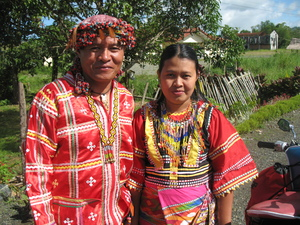

alunggun 
/ʔaluŋgun/
n.
“married_couple”
n.
married couple
Mareet ne alunggun ka layun dè egpaapuley.
Couple always arguing is bad.
Ka an-anayan ne innimu te Magbebayè ne alunggun su si Adan wey si Iba.
The first couple created by the Lord was Adam and Eve.
cf. lunggun
Wrd.Gloss: married_couple
Eng. married couple; couple; husband and wife
Tag. mag-asawa
OCM: Nuclear Family (594)
Online dict status: -
Usage level: M
Updated by: RJH,AAA,AAA,QDL
Last updated: 03/Dec/2009
"alunggun" in text "Childbirth"
"alunggun" in text "Childbirth"
"alunggun" in text "Dreaming of being Rich"
"alunggun" in text "Death of a Young Man"
"alunggun" in healthbook "Migsistu si Wini"
"alunggun" in healthbook "Migderalu si Junjun te malariya"
"alunggun" in healthbook "Egmenuwen ta ne keneg masulug ka me anak ta"
"alunggun" in healthbook "Egmenuwen ta ne keneg masulug ka me anak ta"
"alunggun" in healthbook "Egmenuwen ta ne keneg masulug ka me anak ta"
This page last updated: 28-Dec-2019
Copyright © 2009-2014, Matigsalug Language Christian Association, Inc